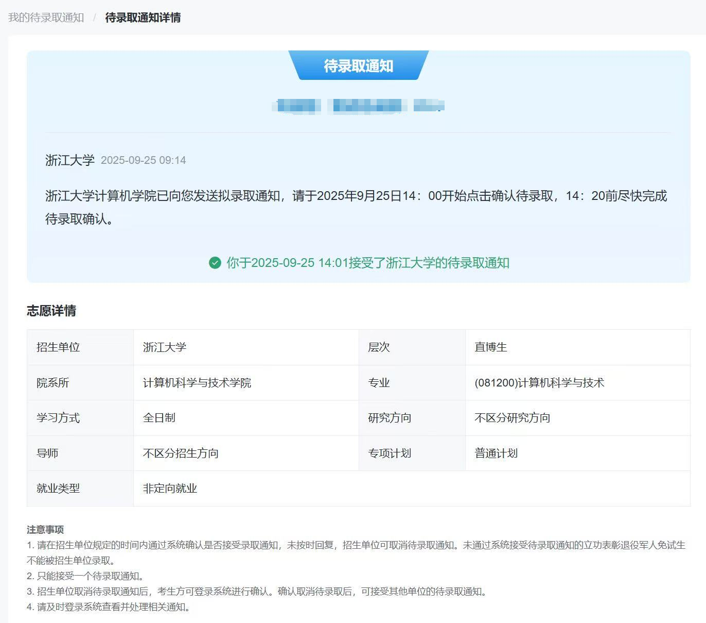

2025年保研经验分享

版权声明©️
本文遵循户晨风开源协议（户子没了🥲好似🎉），我自愿放弃对本文的版权，任何人和组织都可以以盈利为目的，进行商业或非商业形式的使用。
“好的文章应该得到广泛的传播，不好的、不对的文章，更应该得到广泛的批判。”——户晨风@香港维多利亚港。
我为绿群引流
绿群相关网站：CS-BAOYAN-Wiki，持续更新并维护保研经验贴以及相关基础知识。
CS-BAOYAN-DDL：好用的ddl网站，DDL 形式夏令营/预推免咨询网页
绿群4群（人少但热情）QQ号：934495061
第一章节：个人背景
基本信息
- 本科院校：江苏省某中上流211
- 专业：软件工程
- 排名：1/125(本校特色，可以开出排名并列且支持重修的一位绩点成绩单；本校同学别开盒我)
- 绩点/GPA：3.9/4.0
- 英语成绩：四级627 六级577 口语考试良好
科研经历
- 论文发表：无一作a会、一篇b会一作在投、一篇a会n作
- 科研项目：国家级大创主持人、软著一项、一段外校科研实习经历（并非黑工、老师人很好，学长学姐的指导也很有帮助，产出了上述的a会n作）
- 竞赛获奖：水奖一堆，包括但不限于：
- 2023年大数竞赛省一
- 2024年数模美赛M奖
- 2024年蓝桥杯江苏省一等奖、国赛优胜奖
- 2024年数模国赛竞赛省二
- 2024年csp认证320分
- 2025年市调赛省一
荣誉奖项
第二章节：总体投递与入围情况
备注：院校排序按照收到邮件的顺序、未特殊标注均为学术硕士
夏令营
| 院校名称 |
专业方向 |
投递结果 |
备注 |
| 国科大交叉学院 |
人工智能分营 |
入围线上考核 |
未通过线上考核 |
| 软件所 |
基础软件与系统重点实验室 |
入围线上考核 |
未通过线上考核 |
| 国科大杭高院 |
软件工程方向某位老师的组 |
入围线下考核 |
与期末考试冲突、放弃 |
| 同济大学 |
计算机学院 |
入营并获得排名靠前的优秀营员 |
922最终放弃 |
| 南京大学 |
lamda |
入围考核、一面挂 |
感觉一面没问什么刁钻问题，估计放进来看了简历就挂了。 |
| 浙江大学 |
计算机学院直博 |
入围线下考核 |
优秀营员、最终去向 |
| 上海交通大学 |
软件工程专硕 |
未入营 |
|
| 中国科学技术大学 |
一志愿：计算机学院、二志愿：人工智能学院 |
未入营 |
|
| 复旦大学 |
计算机学院 |
提前打工、想想等9推没要求导师捞我，结果入营候补（这也能候补？）+大海营😅 |
922最后被鸽穿哈哈哈，发了这么多入营候补和优营候补、开了预推免😂血条还是不够厚捏。 |
| 南京大学 |
软件学院 |
未入营 |
预推免没去，应该夏令营优营应该鸽了不少 |
预推免
| 院校名称 |
专业方向 |
投递结果 |
备注 |
| 南京大学 |
计算机学院 |
入围线下考核、低位候补（90~100） |
拿了浙计的优营就开摆了，去南京旅游了，不过听说我这个位次最后也能补到。 |
| 清华大学 |
贵系、软件学院、自动化学院工程硕士 |
未入营 |
意料之中、材料填报还挺麻烦，得找老师签推荐信去系统上传，三个志愿得分别上传😫 |
| 浙江大学 |
计算机学院 |
入围线下考核 |
往年浙计夏令营优营不用过预推免、今年还得再参加一次。今年的预推免极小概率表筛优营（可能是掉rk的原因）且出现导师鸽人现象，下文展开细说。 |
第三章节：具体院校解析
特别吐槽 国科大交叉学院+软件所基础软件与系统重点实验室
这两个营的线上考试别具风情，对高等数学、概统、线性代数以及离散数学的要求较高。考完两场试之后大一的数学全记起来了，不过后续还是用不到。
- 国科大交叉学院考试150分，包含高数、线性代数、408综合各50分，难度一般但问题是知识点忘光了😭。
- 软件所国重下面有三个方向，每个方向会组织一场线上考试。由于和期末考试冲突，我只参加了形式化方向的考试。考试8道大题，基本上全是数学，甚至还有数论题。我最终做出其中的3道半，惨遭淘汰。
同济大学
基本信息
- 院校名称：同济大学
- 专业方向：计算机学院
- 考核时间：2025年7月10日-11日
- 考核形式：机试+笔试+面试（实际上机试+笔试的占比很小，面试占比大可以捞人）
入营情况
- 入营人数：所有方向总计200人，听说报了2000多人。其中同济本校100人，外校100人。
- bar：基本强com，硕士赛道双非、211卡rk1，中等985（吉林大学、大连理工）卡前5左右，上等985估计直接oq了；听说本校卡前17%，不保护这一块🥲。这个bar导致后续直接穿了~
- 录取人数：150+位夏令营优营（包括计科、软工方向的硕士+直博）。
- 录取比例：夏令营优营在预推免前面录取，但夏令营鸽了不少。本人总排名80+，计科硕士排名60+，能拿到学硕。
考核内容
夏令营一共两天，10号上午挺宣讲、下午先机试再笔试（强度挺大）；11号面试，大概一个人10多分钟，从早上八点开始等、下午才轮到我，可以充分准备。
- 机试内容：一道模拟、一道技巧题，各100分，一共2小时。（模拟麻烦但细心点就行，技巧题直接return -1得60分😄）
- 笔试内容：专业课基本上全是数据结构，包含少量操作系统，另附一套英语卷子。时间非常紧，总共是一个半小时，专业课一小时和英语半小时分开，考完就收卷、不能自由安排时间。
- 面试内容：本人面试时纯项目拷打，5个老师轮流问、会上压力；但也有同学被问408。面试也有英语问答，问了我读不读博士。
其他内容
同济的夏令营是包住宿和餐食的，校内的环境还可以的。但是同济的计算机学院在嘉定，实话实说，周围的环境不太行：
- 地处郊区，不是你想象中的上海；交通不便，最近的地铁口也得打车坐一会才到。
- 附近全是工地、大卡车开来开去黄土飞扬。
- 无大型商场、综合体，文娱产业不那么发达。
浙江大学
前情提要
往年浙江大学计算机学院的夏令营优营均是稳offer，今年由于教育部的特殊政策和上级领导的直接命令，官方话术是：“不允许任何形式的提前录取，夏令营优营作为预推免面试的重要参考”。这样模糊其词的表述让我在8月中旬拿到优营的时候一直胆战心惊，到9月22号拟录取才放松下来，期间小红书等网络平台上谣言辈出、扰乱军心者不计其数。从事后来看，夏令营确实也如官方话术所述，不能作为铁offer稳录取，但录取的概率大概在98%以上（我知道的只有两个优营没录），没录的主要原因是被导师鸽和绩点排名下降导致的被筛。
- 浙计直博、硕士和浙软硕士互斥，浙计专硕无宿舍；浙大校内食堂会收你20%的餐饮附加费💢！
同时，由于明年（2026）相关的政策变化，包括但不限于保研资格评定提前、夏令营优营效力的变动解释，我不能保证本文相关内容的参考性与有效性，一切以官方文件为准！切记⏰！
基本信息
- 院校名称：浙江大学
- 专业方向：计算机科学与技术
- 考核时间：2025年7月15日-8月12日（本组考核时间，其他课题组时间可能不同，但大抵都是一个月左右，不过基本上可以和导师协商、晚点去线下或者中途离开一会都是可以的）。
- 考核形式：做一个月项目，由报考的导师决定优秀营员。本组的考核形式是4次组会+周报，最后一天进行20分钟的结营答辩；部分课题组会有考勤，本组没有。
- 特别注意： 往年夏令营优营会在8月底学院的复试通过后正式授予优营并拟录取；今年导师直推优营、无单独的学院复试答辩，优营获得者还需在9月中旬报名并通过预推免。
入营情况
- 入营人数：本课题组入围20人，需要陶瓷入营；不同课题组的bar不一样，建议多套导师；
- 录取人数：6个优营。
- 录取比例：30%，实际上中途会有人因为各种原因退出，到最后答辩普遍是50%左右的概率。
预推免（复试）情况·听懂掌声👏
- 官方的说法是：30分钟的面试，同时未提及任何和优秀营员相关的政策。
- 实际的情况是，老师会知道你报考的导师、优营情况（大概率是知道的），在面试时大多数人也会主动提及自己是哪个老师的优营。在这样的条件下，考核的速度和侧重点会发生一定的变化。
- 考察的内容因人而异，从408、到项目、到纯粹的聊天都是有可能的；存在压力面的可能，也存在不压力的可能。
经验总结
- 准备建议：可以提前问老师要不要准备什么知识，虽然老师不会告诉具体的题目，但是可以预习一点。夏令营期间可以积极和学长学姐接触，一是看看组内氛围和相关情况，二是可以趁机要项目上的指导，快人一步🤣。
- 注意事项：住宿在浙江大学的宿舍，费用1500（四人间）到2500（双人间）不等，地点在玉泉或紫金港(cad组)校区。
- 心得体会：在做项目的时候很容易出现毫无进展的情况，毕竟不是每个人都是科研天才、不是每个idea都work；建议在汇报时多展现思考过程，在大家都做不出什么结果的条件下，老师考虑的还是你的思考深度。
- 及时和老师、官方教务联系，沟通信息；不要过度相信互联网的信息。
南京大学
前情提要
由于教育部的要求，呢喃的夏令营无了，只剩下预推免；原先是夏令营和预推免两个list分开招生，今年合一块了。今年呢喃预推免仅提供餐饮，住宿得自理。
基本信息
- 院校名称：南京大学
- 专业方向：计算机科学与技术（呢喃今年在计算机科学与技术方向下面又细分了计算机方向和软件工程方向）
- 考核时间：8月21日线上笔试，8月29日-8月31日线下考核（线下似乎不同的人、不同的方向会有不同的考核时间）
- 考核形式：线上笔试、线下机试+面试
入营情况
- 入营人数：硕士450左右
- 录取人数：100多优营（两个方向）
考核内容
- 线上笔试：单选+多选，时长1个小时，408+离散数学+编译原理什么都考，今年C++和底层的知识涉及非常多。
线下方面
- 第一天上午报道+下午师生交流，第二天机试，第三天面试；由于呢喃特有的超级强com（甚至不保护本校✌️），在第一天的线下交流现场陶瓷是必要的，带上简历直接和老师线下交流，好的话会直接占坑（说不定第三天的面试官就是你交流的♪٩(´ω`)و♪）。
- 机试内容：出题人jyy解析，每一个报考南大cs的都要读一遍！详情见链接。
- 面试内容：每个人大概10~15分钟左右的面试时间，三个面试官面试。进去先让你用英文介绍一门本科期间最喜欢的专业课，然后老师顺着你的英文介绍问你相关的专业课问题（所以，最好用英文介绍你最擅长的课程），基本上3、4个408问题（呢喃特有的偏爱拷打计网💢），也会问一嘴你在学校的其他项目经历。最后会问一道思政问题，例如你本科期间遇到的最大的困难是什么？
面试似乎是可以带简历进去发给老师的，但是我想着有浙计的offer了，就没有准备。
其他内容
- jyy真乃神人也，我们的本科教育确有问题！希望呢喃以后单独招募jyy培养的小学生👨🎓，毕竟他们可以ak jyy出的机试题！南大oj💊！
- 呢喃不愧是呢喃，校内风景秀丽、食堂饭菜味道好；教务老师善解人意，安慰学子被机试摧残的心态；招生过程体验感极佳（除去上一项），相对公平对待内外校学生，面试顺序现场抽取。另有丰富的茶歇、现场老师学长交流会。有机会的话，都可以报名体验下👍。
第四章节：总结
1、总体经验
- 科研经历是非常需要的，无论有无论文产出，至少要有一段谈资，就算吹牛也要有个基础；
- 狡兔三窟，不要在一个树上挂死！ 从博弈的角度出发，个人多拿offer没什么问题，也不必为此感到自责，这是你的正当权利；这个社会没有那么善良，做对自己利益最大化的事情是合理的；你真的确定你认为的铁offer铁吗？你真的不怕导师🐦鸽你吗？
只拿一个offer或者只报一个学校会带来巨大的风险和心理压力，而且你最终还是会释放这些offer，没有必要为别人考虑太多。举例而言，本人在拿到浙计优营后，由于政策问题，一直没法确定是否稳录取；此时，同济的保底和南大的入营与最终的候补就可以稳定自己的心态，并分散风险。
- 多交流多打探。信息不对称是致命的，多在绿裙、小红书等相关平台交流，获取更多知识；但也要注意不要太相信或者被网上的信息干扰，这样可能会引发你的焦虑；信息源、信息的可靠程度和信息本身的内容一样重要！
2. 材料准备
- 简历要清晰大方，这是老师认识你的重要途径。不要用网上那些垃圾收费网站制作，贵且不好看。我的建议是去overleaf网站上找一个简历的latex模板，示例模板链接。不要觉得latex语法和overleaf网站上手麻烦，都是报考硕博的人了，以后写论文肯定要用的，先学起来没坏处！
- 在材料的填报上，由于大多数院校系统所需要的材料是类似的，可以提前把所有自己的材料准备在一个文件夹内放在电脑💻桌面上，方便填报的时候统一检索。（本人保研结束的实在感最浓的一刻就是把那个文件夹扔到回收站♻️）
- 一定程度的吹牛是必要的，只要不太过份，老师也不在乎；毕竟入营是看材料的，拿优营是看表现和能力的；入营的老师不一定那么专业、也不会面对面锤你，填报的时候吹吹牛没什么大问题（但别造假）；但面试的时候吹过头是会被锤爆的🔨。
3.面试技巧：
- 技术上，本人的建议是熟能生巧，不缺钱的话可以先去保底的学校走个过场刷刷经验。到后面试就脸皮厚了，大概也知道老师会怎么问，自己怎么答。
- 态度谦逊、不卑不亢。被上压力是正常的，回答不出来也是正常的；大多数情况下你会被问到不知道的问题，这个时候说说自己的思路。
- 面试本身只是一场面试，普通的紧张和压力是身体为了你更好的发挥的正常现象。为面试赋予人生转折点、不可以失败才是造成不正常压力的根本问题。没有人可以面对人生转折点、不可以失败这样的压力安之若泰，但允许失败、选择去享受 这样的面试态度才更接近面试的本质。
结语
- 引用我最喜欢的鸡汤文的一段话：生命是一种长期而持续的累积过程，绝不会因为单一的事件而毁了一个人的一生，也不会因为单一的事件而救了一个人的一生。属于我们该得的，迟早会得到；属于我们不该得的，即使侥幸巧取也不可能长久保有。如果我们看清这个事实，许多所谓“人生的重大抉择”就可以淡然处之，根本无需焦虑。而所谓“人生的困境”，也往往会变得无足挂齿。
- 另外，分享一则故事：一个年轻的教授进入了一座顶级的大学的顶级学院任教。学院的墙上挂满了历任院长的头像，而这位年轻的教授的毕生目标是——自己的头像出现在这面墙上。但这样的目标合理吗？这是我在推免的过程中经常的思考。
- 最后，我认为推免的一个良好的状态是，你从推免中获得的成长大于推免的最终结果对你学历的提升。
祝大家学有所成，万事如意！
最后更新时间：2025年10月1日，国庆节快乐！